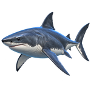
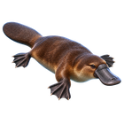
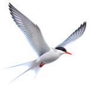
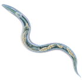

Two honest categories live on this page. Vision means photoreception: a pigment molecule absorbs a photon and the eye builds a picture, in whatever band evolution tuned it to. Radiant heat means the organ absorbs infrared radiation and feels the microscopic warming or mechanical change it causes — real electromagnetic detection, but not color seen the way an eye sees red or violet. For the heat-sensers, the highlighted band below is the radiation their target emits: a warm body, a wildfire, an ankle.
The top bar is the whole spectrum, radio to gamma; the gold window wedges down into a magnified strip running from the far infrared to the near ultraviolet, where every creature on this page lives. Polarization is a second property of light rather than a wider band — cuttlefish read polarization contrast, and bees, ants, butterflies and dung beetles steer by polarized skylight. The mantis shrimp carries that flag here.
Static and slowly changing electric or magnetic fields are electromagnetic, certainly — but they are not propagating light, so they have no place on a wavelength ruler. Assigning a shark a wavelength range would be physics wearing a counterfeit mustache. These senses get their own wing:

Ampullae of Lorenzini read the faint electric fields leaking from every living body — nerve and muscle activity betrayed through seawater. Weakly electric fish go further: they emit their own field and read how nearby objects distort it, an electric flashlight for the dark.

The bill is packed with electroreceptors. Hunting with eyes, ears and nostrils closed, a platypus finds prey underwater by the electric fields of their muscle twitches, cross-referenced with touch to judge distance.

Songbirds crossing continents read Earth's magnetic field for compass direction — and likely parts of their map. The leading suspect is a quantum effect: magnetically sensitive radical pairs in cryptochrome proteins of the eye, which would make the compass something a bird sees.

Laboratory experiments have found acute responses to X-rays in several animals — most strikingly, C. elegans worms perform an immediate avoidance maneuver, mediated by LITE-1, a receptor protein otherwise tuned to ultraviolet. That is real — and it is not a naturally evolved, image-forming X-ray eye. File under experimental edge case, radiation-warning halo attached.
All ranges are approximate and drawn from behavioral and electrophysiological studies; species vary, and the near-infrared fish work in particular reports behavioral response bands, not full visual sensitivity curves. The compact version of this page lives as the Senses layer of the Observatory.